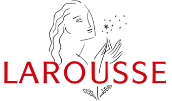
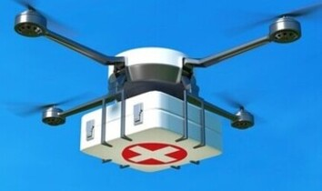
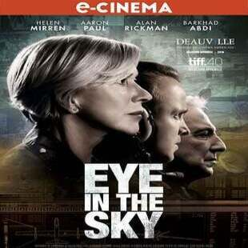
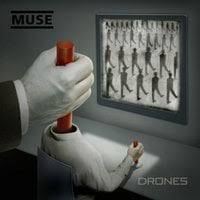
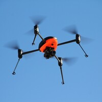
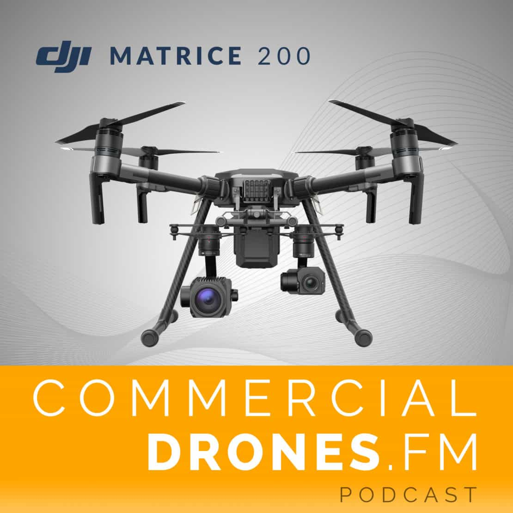
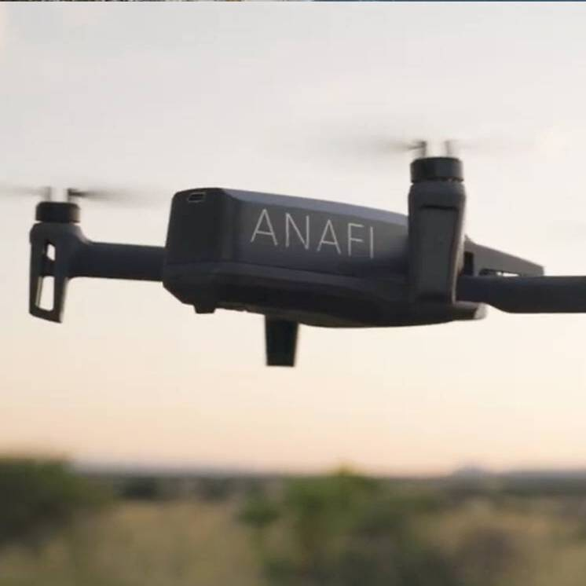
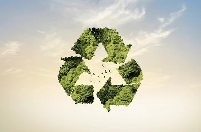
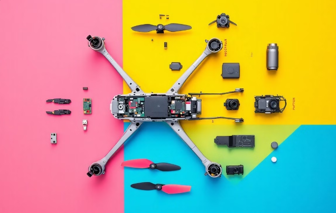

Voici quelques petites précisions en plus de la documentation fournie


Petit avion télécommandé utilisé pour des taches diverses (missions de reconnaissance tactique à haute altitude, surveillance du champ de bataille et guerre électronique). Ils sont aussi utilisés dans le secteur civil pour des missions de surveillance, des prises de vue et divers loisirs.
Ils sont majoritairement utilisés pour les missions militaires. Mais il existe aussi des drones civils. Par exemple le cinéma, la surveillance des zones trop petites pour l'homme, des missions de secours ou des forces de l'ordre.
Voici différentes vidéos pour vous expliqués différentes utilisations du drone dans le civil et au cinéma.
Art contemporain : "Shadow of a Drone" de James Bridle
Cette œuvre d’art conceptuel utilise des installations et des représentations graphiques pour sensibiliser à l’omniprésence des drones dans le monde moderne. En peignant des silhouettes de drones à grande échelle dans des lieux publics, Bridle invite le public à réfléchir à la surveillance et aux implications de ces machines.

2015
Cinéma : "Eye in the Sky"
Réalisé par Gavin Hood, c'est une référence majeure dans l’exploration des dilemmes éthiques liés à l’utilisation des drones militaires. Il met en lumière les décisions complexes autour des frappes de drones, entre efficacité militaire et impacts humains.

2015
Musique : Album "Drones" de Muse
Ce concept explore les thèmes de la déshumanisation et du contrôle, symbolisés par l’utilisation de drones. Certains titre comme "Psycho", critique la manière dont les technologies modernes, dont les drones, peuvent être utilisées pour dominer et manipuler les individus.
2016
Jeu vidéo : "Watch Dogs 2"
Dans ce jeu, les drones sont des outils essentiels pour le protagoniste, permettant d’explorer, de pirater et de manipuler l’environnement. Ils représentent l'intersection entre technologie, surveillance, et pouvoir individuel, tout en offrant un commentaire critique sur la dépendance croissante à ces machines dans la société.
Dates clés

2006 - Sociologie
Lancement du Draganflyer par Draganfly Innovations
En 2006, l’entreprise canadienne Draganfly Innovations lance le Draganflyer, l’un des premiers drones civils commerciaux à offrir des fonctionnalités de capture vidéo en temps réel. Ce modèle révolutionne les applications civiles des drones, ouvrant la voie à leur utilisation dans la photographie aérienne et la surveillance civile.

2012 - Economie
L'émergence des drones commerciaux
En 2012, la Federal Aviation Administration (FAA) des États-Unis commence à autoriser les drones pour des usages commerciaux limités. Cela marque un tournant dans l’économie civile, car il ouvre la voie à une large gamme d’applications commerciales pour les drones, y compris dans la photographie aérienne, les inspections industrielles et l’agriculture. Ce premier cadre législatif a jeté les bases pour la croissance rapide du marché des drones.

2013 - Ecologie
Les premiers drones utilisés pour la surveillance de la faune
En 2013, les drones commencent à être utilisés pour la surveillance de la faune et la gestion des réserves naturelles. Les écologistes et les biologistes utilisent des drones pour surveiller des populations animales (comme les éléphants en Afrique) et prévenir le braconnage, tout en collectant des données sur les habitats naturels. Cette technologie permet d’avoir un aperçu plus précis et moins intrusif que les méthodes traditionnelles.
2014 - Juridique
La cour suprême des États-Unis statuant sur la vie privée et les drones
En 2014, la cour suprême des États-Unis examine pour la première fois les implications des drones sur la vie privée, notamment dans le cas de l'utilisation des drones par les forces de l'ordre pour la surveillance. Ce cas lance un débat national sur les questions juridiques liées à la surveillance par drones, avec des préoccupations croissantes concernant la vie privée et les libertés civiles.
Les drones ont un impact de plus en plus marqué sur l'économie mondiale. Le marché des drones commerciaux pourrait atteindre 127 milliards de dollars d'ici 2025, avec une croissance de 20 % chaque année. Cette technologie intervient dans divers secteurs, apportant une grande efficacité et ouvrant de nouvelles perspectives. Mais quel est l’impact des drones dans l’économie ?
1. Logistique et livraison
La logistique connaît une importante révolution. Par exemple, Amazon a testé la livraison par drone grâce à son service Prime Air, capable de livrer des colis en moins de 30 minutes. En 2020, l'entreprise a investi plus de 1 milliard de dollars dans ce domaine. De son côté, UPS a commencé la livraison des médicaments dans des zones difficiles d’accès, économisant ainsi 40% sur les coûts de transport. L'utilisation des drones pour les livraisons pourrait réduire les coûts logistiques mondiaux de 10%.
2. Agriculture
En 2021, la société DJI estime qu'environ 30% des exploitations agricoles chinoises surveillent les cultures par la voie aérienne. En réduisant l'utilisation de pesticides et en optimisant les récoltes, ils permettent d’augmenter les rendements tout en réduisant les coûts. Des sociétés américaines ont enregistré une réduction de 20% des coûts d'exploitation dans l'agriculture grâce à l’utilisation de drones pour la cartographie et la gestion des cultures.
3. Construction et inspection
Pour la construction, cela permet de réduire de 30% le temps d’inspection des sites et améliore la précision des relevés topographiques. Les drones pourraient augmenter de 10% à 15% la productivité dans la construction, réduisant ainsi les coûts de 5% à 10%. Des entreprises comme Skydio et Parrot proposent des drones conçus pour les inspections d'infrastructures, permettant de percevoir les petits dégâts cachés.
4. Sécurité et services publics
La surveillance et l’assistance d'urgence font aussi partie d’un secteur important. Aux États-Unis, la société Zipline utilise des drones pour livrer des produits médicaux dans des régions isolées. En 2021, elle a effectué plus de 75 millions de livraisons en Afrique, ainsi, réduisant considérablement les délais de livraison de médicaments et de vaccins.
En conclusion, les drones sont en train de réformer de nombreux secteurs économiques. Ils continuent d’augmenter, avec des prévisions de croissance rapide, et leur impact économique s'intensifie au fur et à mesure de l'amélioration des technologies.
Catégorie :
Economie
Les drones, une solution écologique ?
Par Nina Rouleau

Les drones sont des technologies de plus en plus présentes dans notre quotidien. Leur utilisation peut être bénéfique pour l'environnement mais comme toute technologie actuelle elle soulève des questions quant au cycle de vie du produit, sa fabrication, son utilisation et sa facilité d'accès.
Agriculture
Les drones sont équipés de nombreuses technologies embarquées afin de réaliser diverses taches. Dans le domaine agricole, des drones équipés de caméras ou de capteurs permettent de nombreuses avancées écologiques. En effet, ils sont capables d’évaluer les cultures à l’aide de caméras et de capteurs à lumière infrarouge. Ces derniers sont alors capables de détecter les cultures malades nécessitant un soin particulier. Cela permet de limiter l’utilisation des produits chimiques. Ils peuvent aussi identifier les zones avec une forte concentration de nuisibles pour limiter l’utilisation des pesticides. Il est également possible de déterminer le niveau d’irrigation d’une culture afin de limiter la quantité d’eau ajoutée et ainsi optimiser les ressources en eau. Ces technologies permettent donc une meilleure utilisation des ressources comme l’eau ou les engrais mais aussi de limiter les produits plus nocifs comme les pesticides ou autres produits chimiques.
Livraison par drone
Les drones sont aussi largement testés et étudiés dans le domaine commercial, comme par Amazon pour les livraisons de colis par exemple. Ces livraisons seraient plus écologiques car les émissions de gaz à effet de serre et la consommation d’énergie sont moins importantes. Selon une étude de Carnegie Mellon University, la livraison d’un petit colis par drone émettrait 84% de moins de gaz à effet de serre qu’un camion de livraison diesel. La livraison par drone utiliserait aussi 94% d’énergie en moins. Cependant, l’impact sur l’environnement n’est pas quantifiable uniquement par ces paramètres. En effet, il est aussi nécessaire de prendre en compte l’énergie requise pour alimenter les lieux de stockage des drones, l’énergie nécessaire pour leur propre alimentation…
Les batteries au lithium
Ce qui est aussi important c’est le cycle de vie du produit. On sait que les drones fonctionnent aujourd’hui souvent avec des batteries en Lithium polymère. Cependant, la fabrication de ces batteries au lithium n’est pas respectueuse de l’environnement puisque l’extraction du lithium demande une grande quantité d’eau mais aussi pollue les sols. De plus, ces batteries sont sensibles aux facteurs externes comme les chocs pouvant entraîner des incendies ou explosions et des échappements de gaz inflammable…Une technique récemment utilisé pour les recyclés est « la flottation par moussage ». Cette technique permet certes de recycler des morceaux de batteries mais utilise beaucoup d’eau.
Respect de la faune
L’utilisation des drones amène à interagir avec la faune sauvage ce qui n’est pas sans conséquence . En effet, ces derniers génèrent du bruit et peuvent adopter une trajectoire qui peut être signe de danger pour les espèces d’un environnement. Ils peuvent ainsi provoquer de la peur chez les oiseaux par exemple. Ce stress peut causer des difficultés de reproduction affectant ainsi les générations suivantes. Ils peuvent mettre en danger la faune locale par risque de collision ou en forçant la fuite de l’individu. L’utilisation de drone peut aussi perturber les activités de chasse des prédateurs comme les aigles.
Préservation des espèces
Les drones peuvent perturber les espèces locales mais aussi les protéger de différentes menaces. En effet, ils sont capables de réaliser des inventaires de la faunes, c’est a dire vérifier la présence d’espèces dans un milieu (par exemple pour les espèces invasives) mais aussi repéré des nids… Il est donc aussi possible d’étudier le comportement des espèces locales ou encore repérer le braconnage.
En conclusion, les drones sont omniprésents dans notre société. Ils peuvent être utiles dans la gestion des ressources ou la surveillance de la biodiversité. Ils peuvent ainsi être acteurs de la transition écologique. Cependant, son utilisation doit être règlementé afin d'être respectueuse de son environnement par le grand public. La gestion des déchets qui y sont associés sont encore un problème majeur qui doit être réfléchie.
Catégorie :
Ecologie
Est-ce que le drone est dangereux s’il n’est pas régulé ?
Par Gaël Hallopeau

Le drone est un objet de plus en plus répandu ces dernières années. Il est utilisé à de nombreuses fin comme cinématographique, sportive ou même de loisir. Cette surconsommation de l’espace aérien nous pose certain problème éthique ou écologique ainsi, Nous sommes en droit de nous demander est-ce que le drone est dangereux s’il n’est pas régulé ?
La Convention de Chicago, signée en 1944, constitue le fondement du droit international de l'aviation civile et a donné naissance à l'Organisation de l'aviation civile internationale (OACI). Bien qu'elle ne fasse pas explicitement référence aux drones, cette convention établit un cadre réglementaire global applicable aux aéronefs sans pilote à bord. Les États signataires ont la responsabilité d'assurer la sécurité de leur espace aérien et disposent de l'autorité nécessaire pour mettre en place des réglementations concernant l'utilisation des drones civils. Cette convention confirme la souveraineté nationale en matière de réglementation aérienne, permettant ainsi aux pays de prendre des mesures spécifiques pour encadrer l'usage des drones sur leur territoire.
La réglementation européenne des drones distingue deux catégories principales : les drones de loisir et les drones professionnels. Les drones de loisir sont classés en sous-catégories allant de C0 à C6. Les drones C0, considérés comme des jouets, ne sont soumis à aucune restriction particulière en France et peuvent être utilisés sans formalité administrative. La catégorie Ouverte, qui englobe les pratiques à faible risque, comprend les drones de loisir de C0 à C4. Pour voler dans la catégorie Ouverte, les pilotes doivent simplement s'enregistrer sur la plateforme AlphaTango, sans nécessité d'autorisation supplémentaire. Cette catégorie est accessible aux télépilotes âgés d'au moins 14 ans ayant réussi un examen en ligne. Des règles de sécurité sont mises en place pour les drones de loisir afin de prévenir les accidents. Ces règles incluent le respect des distances minimales et maximales, ainsi que l'obligation de voler en vue directe. De plus, le vol est interdit en espace public et en agglomération, le survol de rassemblements de personnes est prohibé, et la hauteur maximale de vol est fixée à 120 mètres.
La réglementation concernant l'utilisation des drones pour la production de contenu vidéo destiné à une diffusion en ligne est en effet plus stricte et comporte plusieurs aspects importants à considérer. Tout d'abord, la diffusion d'images captées par drone nécessite l'autorisation explicite des personnes filmées ou des propriétaires des espaces privés concernés (maisons, jardins, etc.). Cette obligation s'inscrit dans le cadre du respect de la vie privée et de la protection des données personnelles. La législation en vigueur, notamment la Loi "Informatique et Libertés" du 6 janvier 1978 modifiée, doit être scrupuleusement respectée lors de la captation et de la diffusion de ces images. Cette loi encadre la collecte et le traitement des données à caractère personnel. Pour les utilisations professionnelles ou commerciales de drones visant à réaliser des prises de vue, des exigences spécifiques s'appliquent. Les opérateurs doivent obtenir des autorisations délivrées par la Direction Générale de l'Aviation Civile (DGAC) avant de pouvoir exercer ce type d'activité. Il est important de noter que le survol de personnes avec un drone est strictement interdit, sauf dans le cadre d'une procédure bien définie. Cette interdiction vise à garantir la sécurité du public et à prévenir tout incident potentiel. Enfin, il existe des zones géographiques spécifiques où l'utilisation de drones est soumise à des restrictions ou des interdictions particulières. Ces zones, appelées ZICAD (Zones Interdites à la Captation Aérienne de Données), sont définies par arrêté et doivent être respectées par tous les opérateurs de drones.
La réglementation des drones est conçue pour garantir à la fois la sécurité et le respect de la vie privée. Sous l'égide de la Convention de Chicago, un cadre général est établi pour l'aviation civile, y compris les aéronefs sans pilote, tout en laissant aux États le soin de réguler leur utilisation. Les drones de loisir se divisent en plusieurs catégories, chacune soumise à des règles de sécurité précises, telles que l'obligation de voler en vue directe. En ce qui concerne la captation d'images destinées à être diffusées en ligne, il est impératif d'obtenir l'autorisation des personnes concernées, ainsi que des autorisations spécifiques pour toute exploitation commerciale. Ces dispositions visent à promouvoir un usage responsable des drones, tout en préservant les droits et la vie privée des individus.
Catégorie :
Juridique
Comment le drone est-il impliqué dans notre société ?
Par Jonathan Parais
Les drones, ces appareils sans pilote à bord, sont pilotés à distance et utilisés pour diverses applications telles que la surveillance, la photographie, la vidéo, et même des compétitions comme les courses de drones. Cela soulève une question essentielle, comment le drone est-il impliqué dans notre société ?
Initialement développés pour des usages militaires, les drones ont rapidement évolué vers le marché grand public. Aujourd'hui, ils sont accessibles à tous et utilisés pour le loisir. Parmi les modèles populaires, on trouve les drones FPV (vue en première personne), qui offrent une expérience de vol immersive grâce à une télécommande et un retour vidéo en direct via des lunettes VR. D'autres drones, sans caméra, séduisent un public en quête d'une expérience de vol simple, idéale pour un usage intérieur, tout en évitant les complications liées à l'enregistrement vidéo. Les drones ont ainsi permis à des millions de personnes de découvrir les technologies aériennes, d'approfondir leurs compétences en programmation et en mécanique, et de créer des communautés en ligne où passionnés échangent conseils, vidéos et projets collaboratifs.
Dans le secteur agricole, les drones se révèlent précieux pour optimiser les récoltes. Grâce à des capteurs sophistiqués, ils permettent de mesurer l'humidité du sol, la croissance des plantes et les besoins en fertilisation. En matière d'écologie, leur rôle est tout aussi significatif. Ils sont utilisés pour surveiller les forêts et la faune, détecter les incendies en temps réel, et même contribuer à la reforestation en dispersant des graines. Les efforts menés dans l’agriculture et dans la préservation de l'environnement montrent une société de plus en plus soucieuse de l’impact écologique.
Dans le domaine industriel, les drones sont devenus des outils essentiels pour l'inspection de structures complexes telles que les ponts, les éoliennes et les lignes électriques. Leur impact sur le secteur du transport et de la logistique est également notable, avec de nombreuses entreprises expérimentant la livraison de colis par drone, ce qui permet de gagner du temps et de réduire l'empreinte carbone. De plus, les drones sont de plus en plus utilisés dans les secteurs créatifs, notamment pour la réalisation de films et de publicités.
Loin d'être une menace, les drones offrent des possibilités infinies dans des domaines variés tels que l'agriculture, l'environnement, la logistique, la sécurité, et même l'art. Utilisés de manière responsable, ils contribuent au progrès technologique et à une société plus connectée et efficace. Cependant, leur développement soulève des questions cruciales concernant la réglementation et la protection de la vie privée, nécessitant un cadre législatif clair et adapté à cette révolution technologique.
Catégorie :
Sociologie
Micro-trottoir
Par Jonathan Parais, Gaël Hallopeau, Nina Rouleau et Mathurin Paradis